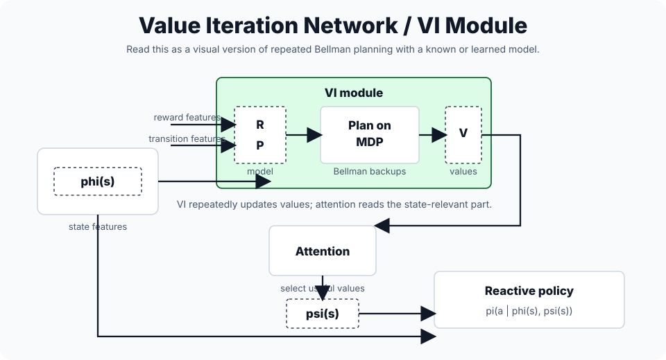
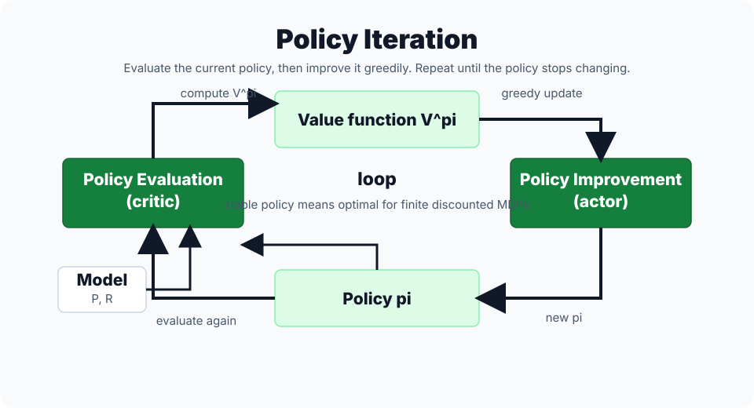

🎮 Value & Policy Iteration值 / 策略迭代
Value Iteration & Policy Iteration
Dynamic programming solves an MDP when the model is known: you can query $P(s'|s,a)$ and $R(s,a)$, so you can compute Bellman backups exactly instead of estimating them from sampled trajectories.
1. Concept Understanding
Value iteration repeatedly applies the Bellman optimality backup until values stabilize. Policy iteration alternates between evaluating the current policy and improving it greedily.
Lecture 24 frames both algorithms as ways to avoid brute-force enumeration over all deterministic policies. There are $|\mathcal{A}|^{|\mathcal{S}|}$ such policies, so enumeration becomes exponential in the number of states.
Both are model-based: they require the transition probabilities $P(s'\mid s,a)$ and reward function $R(s,a)$. For a finite fully observable MDP, there exists at least one deterministic optimal policy, so planning can search for the best action in each state.
2. Plain-English Explanation
Value iteration is like repeatedly updating a map: every location asks, “if I take the best first move, what is my new estimated total score?”
Policy iteration is like choosing a full route plan, grading that plan, then editing the plan wherever another first move looks better.

Visual reference: GeeksforGeeks, Value Iteration vs. Policy Iteration.
How to read the VI module diagram. The left side is the current state representation $\phi(s)$. The planning block uses reward information $R$ and transition information $P$ to perform Bellman-style planning on an MDP, producing a value map $V$.
What attention is doing here. In a value-iteration-network style view, attention reads the part of the value map relevant to the current state and turns it into $\psi(s)$, which the reactive policy uses with $\phi(s)$ to choose an action. For the exam, the core idea is still simpler: value iteration repeatedly applies the Bellman optimality backup, then extracts a greedy policy.
3. Core Intuition
Bellman optimality gives a fixed point for the best possible values. Value iteration approaches that fixed point directly through repeated contraction.
Policy iteration takes a different path: evaluation tells you exactly how good the current policy is, and improvement makes the policy greedy with respect to that evaluation. If the policy stops changing, it is optimal.

Visual reference: GeeksforGeeks, Value Iteration vs. Policy Iteration.
Critic vs actor intuition. Policy evaluation is the critic: it answers "how good is the current policy?" Policy improvement is the actor update: it changes the policy by taking the one-step action that looks best under the critic's value function.
Stopping rule. If the greedy improvement step no longer changes the policy, the loop has reached a stable policy. In a finite discounted MDP, that stable policy is optimal.
This is the generalized policy iteration viewpoint: evaluation and improvement keep pulling each other toward optimality. Value iteration can be read as a truncated version of policy iteration, doing only a one-step optimality backup instead of fully evaluating a policy before improving.
Policy iteration improves monotonically: a greedy improvement is strictly better unless the policy is already optimal. In finite MDPs, there are only finitely many deterministic policies, so policy iteration reaches an optimal policy in finite steps.
4. Key Equations
What it does. At time t, value equals immediate reward plus the best value available at the next time step.
What it does. Each iteration does a one-step lookahead: immediate reward plus discounted best future value from the previous table.
What it does. For a fixed policy, the value vector satisfies a linear Bellman equation.
What it does. After evaluating π, improve it by choosing the action with the largest one-step lookahead value.
What it does. Once the optimal value table is known or nearly converged, the policy is obtained by choosing the action with the largest one-step lookahead.
What it does. The distance from current Q to Q* shrinks like γ^k.
5. Worked Examples
If $R(s,a)=2$, $\gamma=0.9$, and the expected next-state best value is $5$, then the new backup is $2+0.9\cdot 5=6.5$.
Evaluate the current policy by solving $V^\pi=(I-\gamma P^\pi)^{-1}R^\pi$. Then, for each state, compare all actions using $R(s,a)+\gamma\mathbb{E}_{s'}V^\pi(s')$ and choose the best one.
The contraction proof for the Bellman operator justifies value iteration: each backup shrinks the worst-case value error by at least a factor of $\gamma$.
6. Problem-Solving Tips
- If $P$ and $R$ are known, dynamic programming is available.
- If the problem asks for repeated Bellman backups, use value iteration.
- For value iteration, initialize $V$ or $Q$, sweep all states with the max backup, stop at threshold $\theta$, then extract the greedy policy.
- If the problem asks for evaluate-then-improve, use policy iteration.
- For policy iteration, initialize a policy, evaluate it by a linear system or iterative evaluation, greedify it, and stop when the policy is stable.
- If only sampled transitions are available, switch to model-free methods such as Q-learning.
7. Common Mistakes
- Applying DP when $P$ is unknown. DP is model-known planning.
- Confusing policy evaluation with policy improvement.
- Thinking value iteration returns a policy automatically. It returns values first; the greedy policy must be extracted afterward.
- Forgetting that policy iteration terminates on policy stability, not on a small value-table change.
- Using $V^{(k)}$ from the new iteration on some states and the old iteration on others without stating an asynchronous update scheme.
- Forgetting the terminal / horizon boundary condition in finite-horizon DP.
8. Exam Focus
- Value iteration backup formula.
- Policy iteration = policy evaluation + policy improvement.
- Both require known transition and reward models.
- Bellman contraction explains convergence.
- Know the comparison: value iteration uses a max backup every sweep; policy iteration fully evaluates a policy before greedy improvement.
- Know the convergence story: VI is geometric by contraction; PI is finite in finite MDPs because there are finitely many deterministic policies.
| Feature | Value Iteration | Policy Iteration |
|---|---|---|
| Main move | Directly update values toward $V^*$ or $Q^*$ | Alternate evaluation and greedy improvement |
| Per iteration | Cheaper Bellman max sweep | More expensive evaluation, often fewer outer loops |
| View | Truncated policy iteration | Full evaluation plus greedy improvement |
9. Quick Checklist
Last-minute recall
- Known model → DP.
- Value iteration updates values directly and extracts policy afterward.
- Policy iteration alternates evaluate and improve until policy stability.
- Greedy improvement uses one-step lookahead.
- GPI = evaluation plus improvement pulling toward optimality.
- Unknown model → Q-learning / policy gradient.
Value Iteration 与 Policy Iteration
Dynamic programming 是在已知环境模型时求解 MDP 的方法：你能直接使用 $P(s'|s,a)$ 和 $R(s,a)$，所以可以精确算 Bellman backup，而不是靠 trajectory sample 估计。
1. 概念理解
Value iteration 反复套 Bellman optimality backup，直到 value 稳定。Policy iteration 则是“先评估当前策略，再把策略改得更贪心”，不断交替。
Lecture 24 的动机是：枚举所有 deterministic policies 太贵。这样的策略一共有 $|\mathcal{A}|^{|\mathcal{S}|}$ 个，会随 states 数量指数增长，所以我们用 Bellman 结构系统性地找最优策略。
两者都是 model-based：必须知道 transition probabilities $P(s'\mid s,a)$ 和 reward function $R(s,a)$。在有限、完全可观测的 MDP 里，至少存在一个 deterministic optimal policy，所以规划时可以把目标理解成“每个 state 选一个最好 action”。
2. 大白话理解
Value iteration 像不停更新地图：每个位置都问“如果我现在走最好的第一步，总分会是多少？”
Policy iteration 像先定一套路线方案，给它打分，然后在每个路口看有没有更好的第一步；如果没有地方想改，这套方案就是最优。
视觉参考：GeeksforGeeks, Value Iteration vs. Policy Iteration。
怎么看 VI module 图？ 左边 $\phi(s)$ 是当前 state representation；planning block 用 reward 信息 $R$ 和 transition 信息 $P$ 在 MDP 上做 Bellman-style planning，输出 value map $V$。
Attention 在这里干嘛？ Value-iteration-network 视角里，attention 从 value map 里读出和当前 state 最相关的部分，形成 $\psi(s)$；reactive policy 再结合 $\phi(s)$ 和 $\psi(s)$ 选 action。考试里更核心的版本是：VI 反复做 Bellman optimality backup，最后抽取 greedy policy。
3. 核心直觉
Bellman optimality 给出最优 value 的 fixed point。Value iteration 直接靠 contraction 往这个 fixed point 靠近。
Policy iteration 则把问题拆开：evaluation 精确知道当前 policy 有多好；improvement 用这个评价去做 greedy 更新。策略不再变化时，就已经满足 optimality。
视觉参考：GeeksforGeeks, Value Iteration vs. Policy Iteration。
Critic / actor 怎么理解？ Policy evaluation 是 critic：回答“当前 policy 到底好不好？” Policy improvement 是 actor update：根据 critic 给出的 value function，把 policy 改成 one-step greedy。
什么时候停？ 如果 greedy improvement 后 policy 不再变化，就叫 policy stable。在 finite discounted MDP 里，这个 stable policy 就是 optimal。
这就是 generalized policy iteration / GPI：evaluation 和 improvement 两股力量互相拉着系统走向 optimality。Value iteration 可以看成 truncated policy iteration：不把某个 policy 完整 evaluate 到收敛，而是每轮只做一步 optimality backup。
Policy iteration 有 monotonicity：greedy improvement 会得到更好的 policy，除非当前 policy 已经 optimal。有限 MDP 只有有限多个 deterministic policies，所以 PI 会在有限步内到达 optimal policy。
4. 关键公式
这个公式在做什么？ 有限时域里，第 t 步价值等于即时奖励加下一步能拿到的最佳价值。
这个公式在做什么？ 每轮都做 one-step lookahead：即时 reward + 上一轮表格里的最佳未来 value。
这个公式在做什么？ 固定策略下，value vector 满足线性的 Bellman 方程。
这个公式在做什么？ 评估完策略 π 后，用一步前瞻选择价值最大的动作，从而改进策略。
这个公式在做什么？ 一旦 optimal value table 已知或基本收敛，policy 就是每个 state 里 one-step lookahead 最大的 action。
这个公式在做什么？ 当前 Q 估计和最优 Q* 的距离会像 γ^k 一样几何下降。
5. 例题精解
若 $R(s,a)=2$、$\gamma=0.9$、下一状态的最大 value 期望是 $5$，则新 backup 为 $2+0.9\cdot5=6.5$。
先解 $V^\pi=(I-\gamma P^\pi)^{-1}R^\pi$ 得到当前 policy 的价值；再对每个 state 比较所有 action 的 $R(s,a)+\gamma\mathbb{E}_{s'}V^\pi(s')$，选最大的动作作为新策略。
HW5 要证 Bellman operator 是 contraction。这个结果就是 value iteration 的收敛理由：每次 backup 最坏误差至多乘 $\gamma$。
6. 题型与解题步骤
- 题目给了 $P$ 和 $R$，可以用 DP。
- 题目说 repeated Bellman backups，多半是 value iteration。
- Value iteration 步骤：初始化 $V$ 或 $Q$，对所有 states 做 max backup，变化小于 $\theta$ 后，抽取 greedy policy。
- 题目说 evaluate then improve，多半是 policy iteration。
- Policy iteration 步骤：初始化 policy，线性系统或 iterative evaluation 求 $V^\pi$，再 greedify，直到 policy stable。
- 如果只有 sampled transitions，没有完整模型，就转向 model-free：Q-learning 或 policy gradient。
7. 常见错误
- 在不知道 $P$ 的情况下硬用 DP；DP 是 model-known planning。
- 混淆 policy evaluation 和 policy improvement。
- 以为 value iteration 直接输出 policy。它先输出 values，最后还要 greedy extraction。
- 以为 policy iteration 用 value change 停止。PI 的标准停止条件是 policy stable。
- 同步更新时一半用旧 $V$、一半用新 $V$，但没有说明 asynchronous update。
- 有限时域 DP 忘记 terminal / horizon 边界条件。
8. 考试重点
- 默写 value iteration backup。
- 知道 policy iteration = policy evaluation + policy improvement。
- 说明两者都需要已知 transition / reward model。
- 用 Bellman contraction 解释 convergence。
- 会比较：VI 每轮做 max backup；PI 先完整 evaluate 当前 policy，再 greedy improve。
- 会说 convergence：VI 由 contraction 得到 geometric convergence；PI 在有限 MDP 中因 deterministic policies 有限而 finite convergence。
| 对比点 | Value Iteration | Policy Iteration |
|---|---|---|
| 核心动作 | 直接把 values 往 $V^*$ / $Q^*$ 更新 | evaluation 和 greedy improvement 交替 |
| 单轮成本 | 单轮 Bellman max sweep 比较便宜 | evaluation 更贵，但 outer loops 通常更少 |
| 本质视角 | truncated policy iteration | full evaluation + greedy improvement |
9. 速记清单
最后一刻能默
- Known model → DP。
- Value iteration 先更新 value，最后抽取 policy。
- Policy iteration 交替 evaluation / improvement，直到 policy stable。
- Greedy improvement 用 one-step lookahead。
- GPI = evaluation + improvement 一起把系统推向 optimality。
- Unknown model → Q-learning / policy gradient。